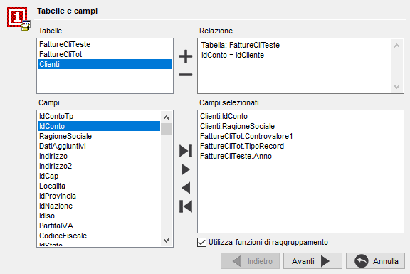
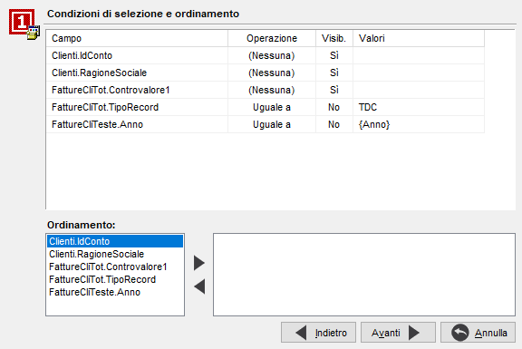
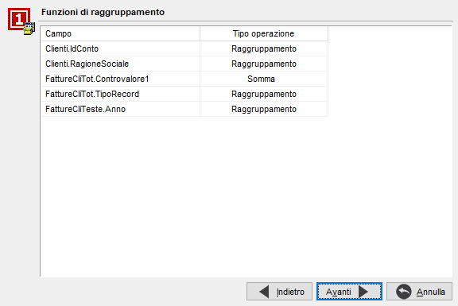
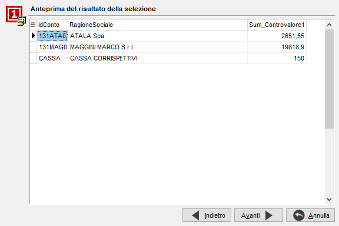
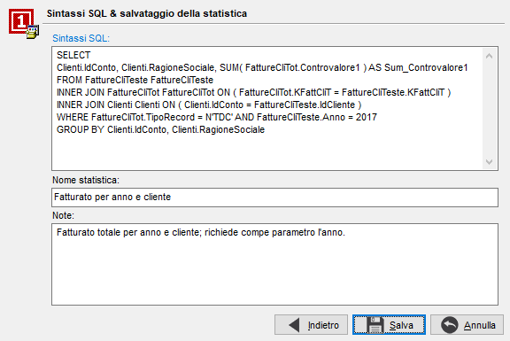

La creazione o modifica di una statistica accede ad una serie di finestre in sequenza che guidano l'utente nella composizione della statistica stessa in step successivi.
Nel caso di una nuova statistica se sono configurati più database a cui accedere compare una finestra aggiuntiva che consente di selezionare il database su cui si vuole effettuare la statistica.
Step 1

Da questa finestra è possibile gestire le tabelle ed i relativi campi che andranno a comporre la statistica; i pulsanti presenti consentono di aggiungere o togliere uno o più campi oppure una tabella. L'aggiunta di più tabelle determina la composizione di relazioni tra le tabelle stesse. Una volta terminata la selezione delle tabelle e dei relativi campi, è necessario premere Avanti per passare allo step successivo.
Step 2

Questa finestra consente di determinare quali tra i campi selezionati devono essere visualizzati e se utilizzare dei criteri di selezione da richiedere come limiti per l'elaborazione della statistica stessa, quali ad esempio un campo compreso fra due valori oppure uguale ad un valore specifico. La sezione inferiore consente invece di determinare l'ordinamento della statistica. La pressione del pulsante Avanti conduce allo step successivo.
Step 3

Questa finestra compare soltanto se è stata apposta la spunta al campo 'Utilizza funzioni di raggruppamento' nello step 1. In questa fase è possibile indicare i campi che saranno oggetto del raggruppamento e aggiungere funzioni di aggregazione, quali somma, minimo, massimo, ecc. su i vari campi presenti. La pressione del pulsante Avanti conduce allo step successivo.
Step 4

Questa finestra compare soltanto se non sono stati inseriti criteri di selezione modificabili nello step 2. In questa fase è possibile visualizzare l'anteprima del risultato della statistica. La pressione del pulsante Avanti conduce allo step successivo ed ultimo.
Step 5

In questa sezione viene presenta la sintassi SQL della statistica; è necessario assegnare un nome alla statistica ed aggiungere, se si ritiene necessario delle note, che saranno visualizzate nella parte bassa del menù principale quando si selezionerà la statistica.
In questa fase è possibile accedere alla modifica della sintassi SQL, tenendo presente che una volta scelta questa possibilità non sarà più consentito l'utilizzo del Wizard.